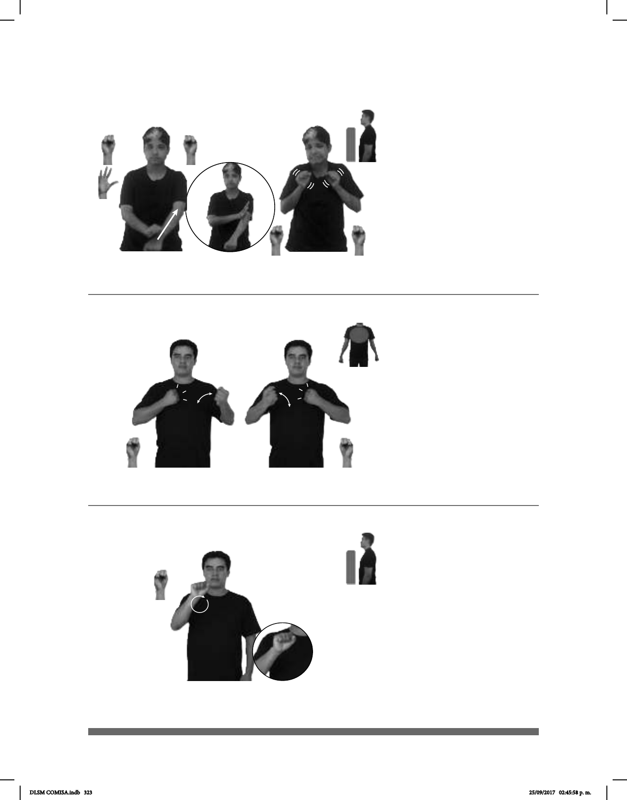

323
Seña: SM
S.1
Palma hacia fuera.
A la altura del hombro.
El brazo y la mano se
mueven formando círculos en su sitio.
sust. m. Sexto día de la
semana, que sigue al viernes y precede
al domingo. Para los cristianos, séptimo
o último día de la semana, como se
observa en el calendario gregoriano;
para los judíos, también último día de
la semana, que se dedica al culto y no
al trabajo.Nis plaborerspel et fuga.
(S-90)
PASADO-SÁBADO CARRETERA HABER ACCIDENTE GRAVE
El sábado pasado hubo un grave accidente en la carretera.
Seña: SC: I. SB; II. SS
I. MD seña que pasa de S.1
a 5.2, MB S.1; II. S.1
I. MD palma oblicua hacia
abajo y hacia la izquierda. MB palma hacia
adentro; II. Palmas hacia fuera.
I. MD sobre la muñeca y se
desliza al codo de MB. MBa la altura de la
cadera; II. A la altura del pecho.
I. Recto; II. Las manos se
agitan.
II. Ceño fruncido,
boca abierta mostrando los dientes, rotación
de cabeza.
adj. Que causa sensación de
asco o rechazo.
(S-88)
PALABRA dm-REPULSIVO REPULSIVO
emoción negativo
EMPEZAR LETRA dm-R
La palabra "repulsivo" se escribe con "r".
Seña: SB
MD y MB S.1
MD y MB palmas hacia
adentro.
MD y MB sobre el pecho.
Las manos golpean el
pecho alternada y repetidamente.
Simula los
movimientos de un gorila.
País ubicado en el oeste de
África cuya capital es Kigali.
(S-89)
PASADO PAÍS pos-SU RUANDA HABER GUERRA MUERTOS++
En el pasado en Ruanda hubo una guerra que dejo muchos muertos.
DLSM COMISA.indb 323 25/09/2017 02:45:58 p. m.